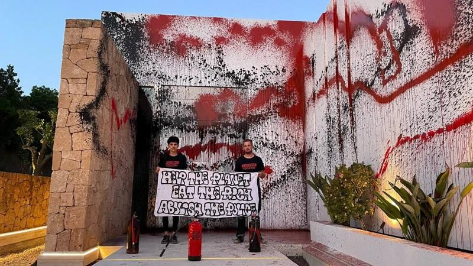

阿根廷足球巨星梅西（Lionel Messi）名下一栋位于西班牙度假小岛伊维萨（Ibiza）的豪宅6日遭环保人士喷漆，引来阿根廷总统米雷伊（Javier Milei）的怒火，他要求西班牙政府保护境内阿根廷人的安全。
中央社引述法新社报导，西班牙环保组织「未来蔬菜」（Futuro Vegetal）倡议人士发布影片，内容为两名成员站在一栋房屋前，手里的布条写着「拯救地球—吃掉富人—废除警察」。这栋房子距离伊维萨西部海岸的卡拉塔里达（Cala Tarida）海湾不远。
随后他们在房屋白色外墙上用红色和黑色颜料喷漆。
「未来蔬菜」在声明中说，他们想借由针对这栋豪宅来凸显「富人对气候危机的责任」；他们指称这栋房子是「非法建筑」。
「未来蔬菜」引述非政府组织「乐施会」（Oxfam）2023年的报告，内容指出，2019年，全球最富有的1%人口产生的碳排放量与全球最贫穷的2/3人口相同。他们还说，最脆弱的社群才是承受气候危机「最糟后果」的人。
米雷伊在社群平台X上愤怒批评「共产主义者想借着谋杀富人和废除警察来解决气候变迁」。
他补充说，「我与梅西一家站在一起面对这起懦弱、疯狂的事件」，并要求西班牙总理桑杰士（Pedro Sanchez）政府保障境内阿根廷公民的人身安全。